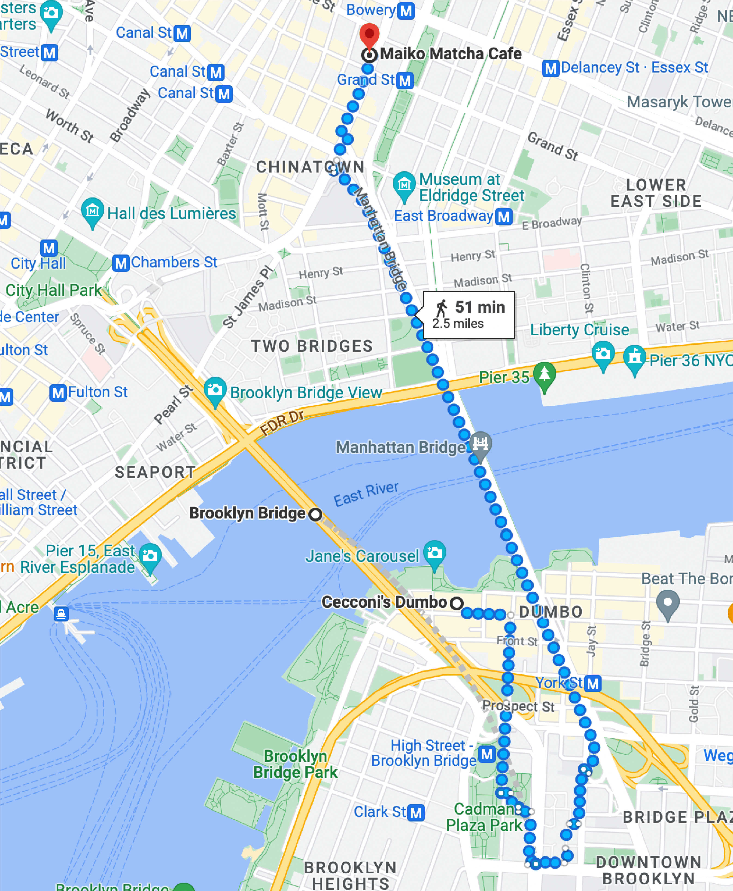
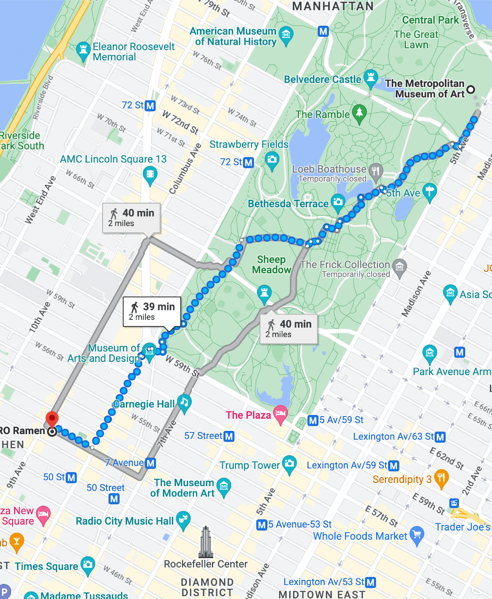
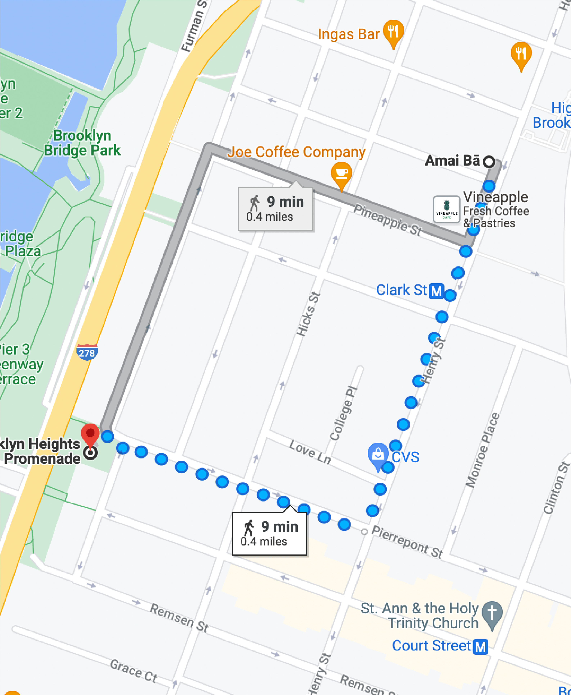
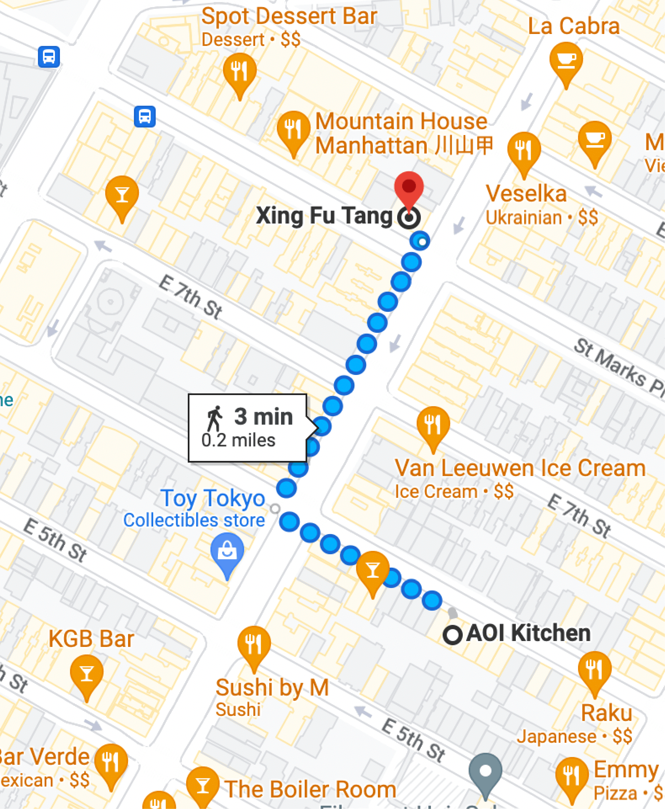
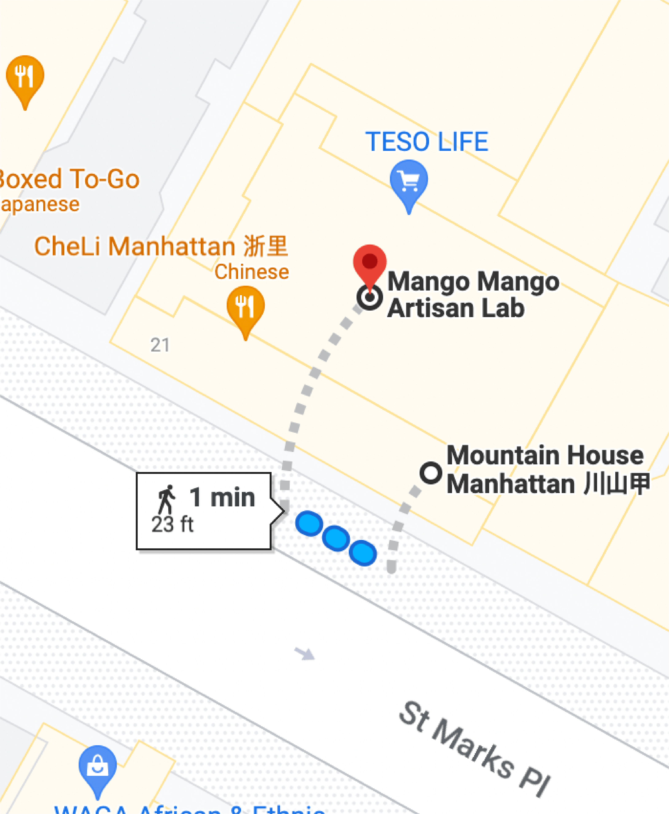
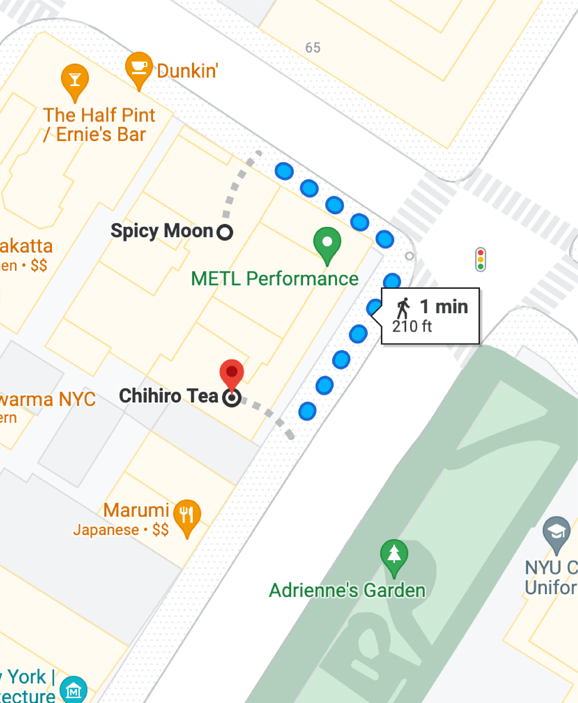
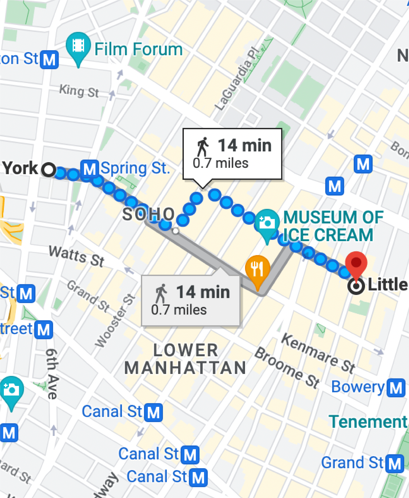
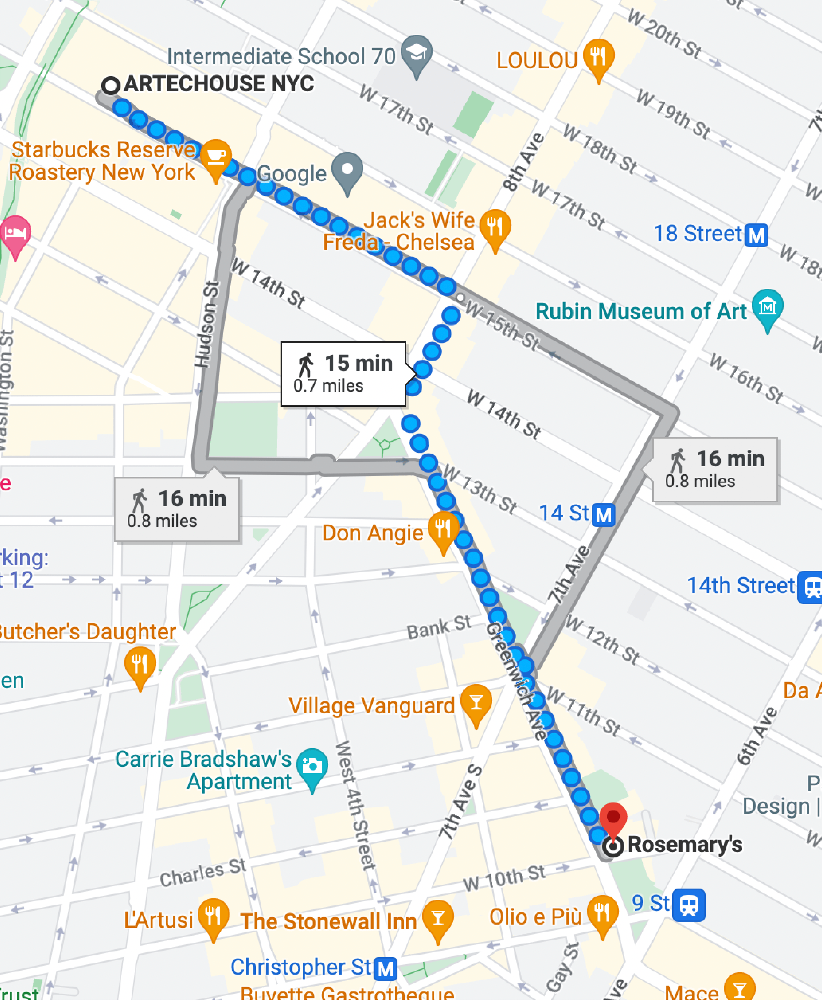
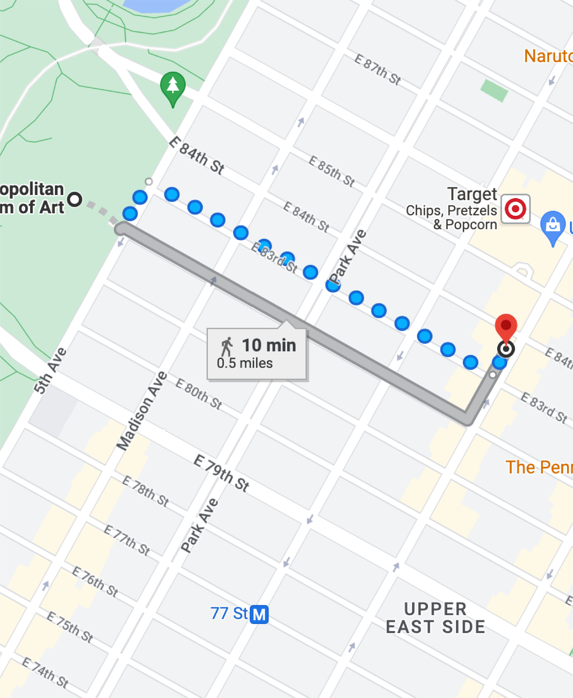

Itineraries
Here are some of my itinerary recommendations to help you plan your day!
These are based on my own experiences, so feel free to explore on your own.
Cecconi's → Brooklyn Bridge → Maiko
Get lunch at Cecconi's DUMBO, then walk accross the Brooklyn Bridge to grab matcha at Maiko.

MET → Central Park → Toribro
Look around the MET, walk through Central Park, and head down a few blocks to get ramen at Toribro for a perfect weekend plan.

Amai bā → Brooklyn Heights Promenade
Take a stroll along the Brooklyn Heights Promenade with ice cream! Pick up Amai Bā on your way to the promenade at night for the best view.

AOI Kitchen → Xing Fu Tang
Brown Sugar boba after a nice dinner can never go wrong! I always get Xing Fu Tang right after AOI Kitchen :)

Szechuan Mountain House → Mango Mango
Need to cool your mouth after a fire hot meal? Go to Mango Mango right next door! No walk, just immediate dessert.

Spicy Moon → Chihiro Tea
Refreshing Chihiro tea is right around the corner from Spicy Moon. Definitely stop by if you're ever there!

Color Factory → Little Bake Shop
Fill your day with color at the Color Factory and fill your tummy with sweetness at the little cupcake bakeshop :D

Artechouse → Rosemary's
After an immersive experience at ARTEHCOUSE, treat yourself with amazing Italian food <3 There are many other restaurants down the street, so explore!

The MET → Levain Bakery
I always stop by Levain when I'm in the upper east side. After an ~eye opening~ experience at the MET, grab a cookie or two <3
